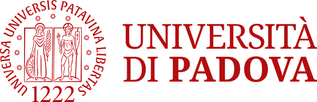
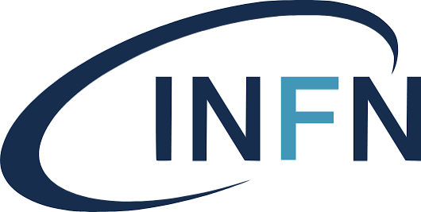

Welcome
Three days in Padova celebrating the scientific work of Prof. Luca Salasnich on the occasion of his 60th birthday, from the physics of ultracold gases to nonlinear phenomena and quantum chaos.
Throughout his career, Luca has brought together ideas from condensed matter physics, statistical mechanics, nonlinear science and mathematical physics, showing how methods developed in one field can shed light on another.
This workshop celebrates that body of work. It gathers long-standing collaborators, former students and leading researchers from around the world, whose interests meet Luca’s research in its many directions. Over three days of talks, participants will discuss recent results and open problems in these fields.
The workshop will take place from Monday 24 to Wednesday 26 May 2027 at the University of Padova, Italy.
- Workshop24–26 May 2027
- VenueUniversity of PadovaSee venues and directions
- Abstract deadline14 April 2027
- RegistrationFree, but requiredDeadline: 14 April 2027


For any question, feel free to contact the organizers.
Invited Speakers
- Alberto Ambrosetti University of Padova, Italy
- Francesco Ancilotto University of Padova, Italy
- Andrea Bardin University of Padova, Italy
- Alessia Burchianti CNR-INO and LENS, Florence, Italy
- Fabio Cinti University of Florence, Italy
- Roberta Citro University of Salerno, Italy
- Lorenzo Frigato University of Padova, Italy
- Stefano Giorgini University of Trento, Italy
- Francesco Lorenzi University of Padova, Italy
- Boris Malomed Tel Aviv University, Israel
- Nicola Manini University of Milan, Italy
- Pieralberto Marchetti University of Padova, Italy
- Francesco Minardi University of Bologna, Italy
- Anna Minguzzi CNRS and Université Grenoble Alpes, France
- Roberto Onofrio Dartmouth College, USA
- Alberto Parola University of Insubria, Como, Italy
- Maria Pelizzo University of Padova, Italy
- Vittorio Penna Politecnico di Torino, Italy
- Luciano Reatto University of Milan, Italy
- Marko Robnik CAMTP, University of Maribor, Slovenia
- Fabio Sattin Consorzio RFX, Padova, Italy
- Pierluigi Silvestrelli University of Padova, Italy
- Jacques Tempere University of Antwerp, Belgium
- Flavio Toigo University of Padova, Italy
- Andrea Trombettoni University of Trieste, Italy
- Cesare Vianello University of Padova, Italy
- Sandro Wimberger University of Parma, Italy
Registration
Participation is free. There is no registration fee.
Places are limited, so we kindly ask all participants to register in advance. This helps us organise the workshop.
Registrations are open until 14 April 2027.
Programme
Book of abstracts Flyer24May Monday
Department of Physics and AstronomyVia Marzolo 8, Padova
| Time | Session |
|---|---|
| 09:00 | Registration |
| 09:50 | Opening |
| 10:00 | Invited talk |
| 10:30 | Invited talk |
| 11:00 | Coffee break |
| 11:30 | Invited talk |
| 12:00 | Invited talk |
| 12:30 | Invited talk |
| 13:00 | Lunch |
| 14:30 | Invited talk |
| 15:00 | Invited talk |
| 15:30 | Coffee break |
| 16:00 | Invited talk |
| 16:30 | Invited talk |
25May Tuesday
Aula Magna, Department of Chemical SciencesVia Marzolo 1, Padova
| Time | Session |
|---|---|
| 09:30 | Invited talk |
| 10:00 | Invited talk |
| 10:30 | Invited talk |
| 11:00 | Coffee break |
| 11:30 | Invited talk |
| 12:00 | Invited talk |
| 12:30 | Invited talk |
| 13:00 | Lunch |
| 14:30 | Invited talk |
| 15:00 | Invited talk |
| 15:30 | Invited talk |
| 16:00 | Coffee break (until 18:00) |
| 20:30 | Social dinner |
26May Wednesday
Archivio Antico, Palazzo del BoVia VIII Febbraio 2, Padova
| Time | Session |
|---|---|
| 10:00 | Invited talk |
| 10:30 | Invited talk |
| 11:00 | Coffee break |
| 11:30 | Invited talk |
| 12:00 | Invited talk |
| 12:30 | Invited talk |
| 13:00 | Lunch |
| 14:30 | Invited talk |
| 15:00 | Invited talk |
| 15:30 | Coffee break |
| 16:00 | Invited talk |
| 16:30 | Invited talk |
| 17:00 | Closing |
Venue
The workshop takes place in three different venues of the University of Padova, one for each day.
- Monday 24 MayDepartment of Physics and Astronomy “Galileo Galilei”Aula Rostagni or Aula B (to be confirmed), Via Marzolo 8Open in Google Maps
- Tuesday 25 MayAula Magna, Department of Chemical SciencesVia Marzolo 1, a short walk from the Department of PhysicsOpen in Google Maps
- Wednesday 26 MayArchivio Antico, Palazzo del BoVia VIII Febbraio 2, in the historic centreOpen in Google Maps
By train
Padova lies on both the Venice–Milan–Turin and the Venice–Bologna–Rome railway lines, with frequent connections. Timetables are available on the Trenitalia website.
The railway station is about a 15-minute walk from the venues. Alternatively, a taxi takes about 10 minutes (tel. +39 049 651333).
By air
Venice Marco Polo Airport (Tessera) is the nearest airport, about 30 km from Padova. From there you can reach Padova:
- by bus, directly from the airport to Padova (Busitalia timetable). The journey takes about one hour, depending on traffic. The last stop in Padova is next to the railway station;
- by bus and train: take a local bus from the airport to Venezia Mestre railway station, then a train to Padova (about 40 minutes).
Two other airports are within reach. Verona Valerio Catullo Airport (Villafranca Veronese) and Treviso Airport are both connected by shuttle to their city’s railway station, from where trains run to Padova.
Airport shuttle from Venice. Two companies, AirService and Landomas, offer the same door-to-door service from Marco Polo Airport. A driver meets you at arrivals with a sign and takes you by minivan to any address in Padova, such as your hotel, in about 40 minutes. It costs more than the bus and must be booked at least 24 hours in advance.
Getting around Padova
Buses and the tram are run by Busitalia Veneto. A 90-minute ticket costs €1.70, enough to get from the railway station to the venue. A day ticket costs €3.60 and gives unlimited travel until midnight on the day you first validate it.
Tickets are sold at ticket machines (for example at the railway station), in the Busitalia Veneto app, and at tobacconists and newsstands. You can also pay on board with a contactless card, and you’ll never pay more than the day-ticket price however many trips you make. Remember to validate your ticket before boarding.
More information is on the Busitalia Veneto website.
By car
- Motorway A4 Venice–Milan: take the Padova Est exit if you are coming from Venice, or Padova Ovest if you are coming from Milan.
- Motorway A13 Bologna–Padova: take the Padova Sud exit.
Please note that the historic centre of Padova is a limited traffic zone (ZTL), where cars need a special permit. Plan your route and parking accordingly. Details (in Italian) are on the City of Padova website.
Organizers
- Giacomo Bighin PMF, University of Zagreb
- Luca Dell’Anna DFA, University of Padova
- Giacomo Gradenigo DFA, University of Padova
- Andrea Perali University of Camerino
- Andrea Tononi Polytechnic University of Catalonia and ICFO
Sponsorship
We gratefully acknowledge the support of the University of Padova and of the Istituto Nazionale di Fisica Nucleare (INFN), which have made this workshop possible.